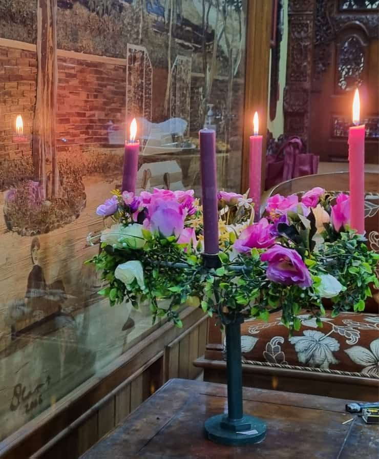
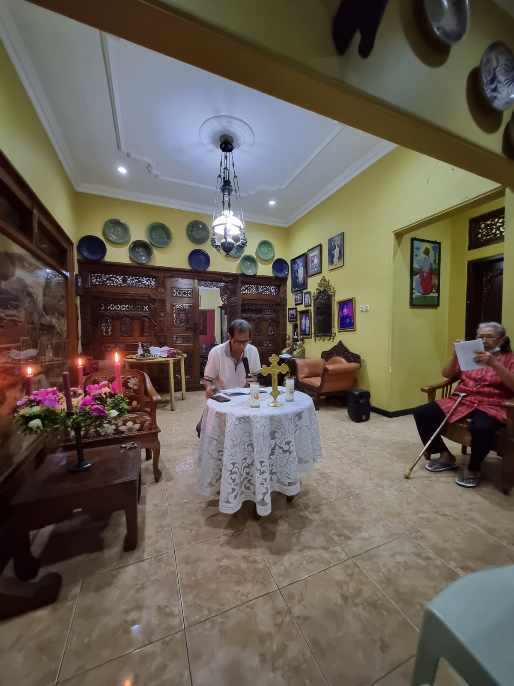
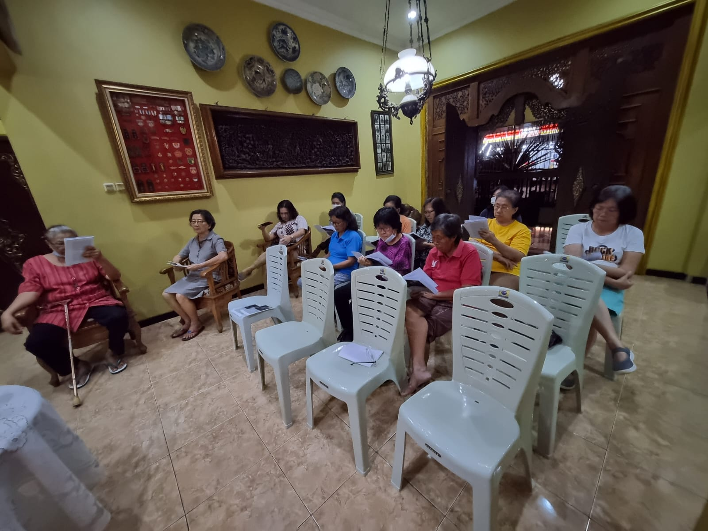
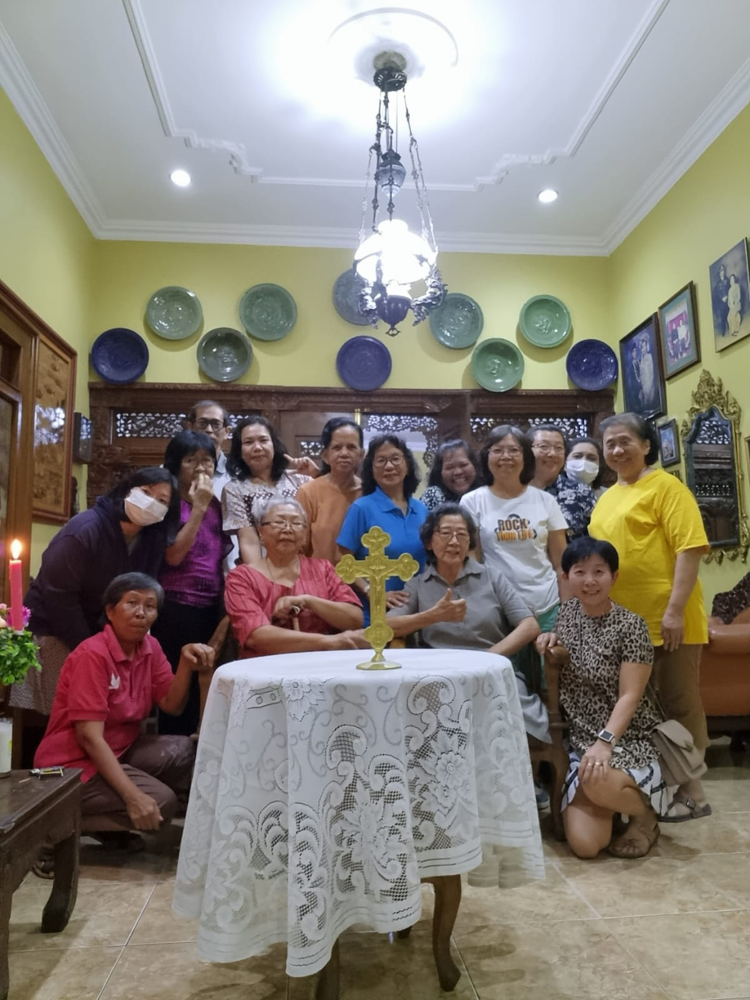
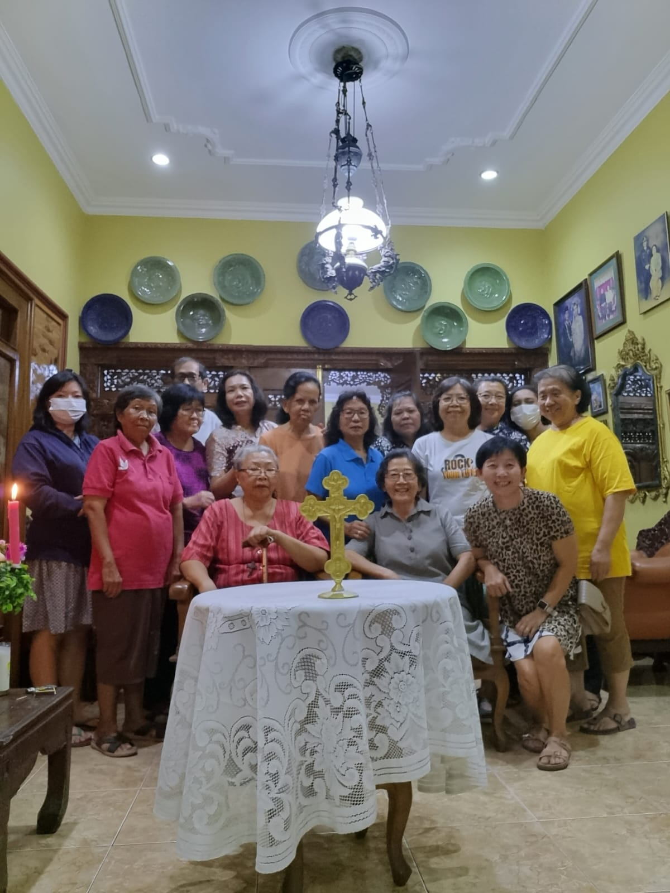

Percakapan Rohani Adven ke 3: Hidup dalam Roh Kudus
|  |  |  |
 |
 |  |
Tema pertemuan ketiga :“Hidup dalam Roh Kudus”
Tujuan
- Menggali lebih dalam pengalaman dan pengetahuan tentang iman kepercayaan akan Allah Roh Kudus.
- Menemukan benang merah dari perjalanan Percakapan Rohani Adven 2023.
- Menemukan benang merah dari perjalanan kebersamaan selama pendalaman Credo 2023.
Pengantar
Percaya akan Roh Kudus berarti mengakui iman akan Pribadi ketiga Allah Tritunggal, yang berasal dari Bapa dan Putra, dan „disembah dan dimuliakan bersama Bapa dan Putra“. Roh Kudus diutus „ke dalam hati kita“ (Gal 4:6) sehingga kita menerima hidup baru sebagai anak-anak Allah. Roh Kudus pula yang selalu menyertai diri kita, membimbing kita, bahkan Roh Kudus akan membantu kita berdoa ketika kita tidak tahu cara untuk berdoa (Rm 8:26 – 27).
Pada pertemuan yang ketiga ini, kita diajak untuk menggali kembali pengalaman dan pengetahuan iman kita akan iman kepercayaan kita pada Allah Roh Kudus. Penyertaan Allah Roh Kudus dalam hidup kita nyata terasa dalam hidup persekutuan kita, baik di lingkup paroki maupun di lingkungan. Untuk itu, bersyukur atas rahmat penyertaan Allah, mari kita bersama-sama menguatkan hati kita satu sama lain dalam iman akan Roh Kudus.
Inspirasi Hidup
BAHASA ROH ADALAH BAHASA DAMAI
Purwokerto – Pada hari Minggu, 28 Mei 2023, bertepatan dengan Hari Raya Pentakosta, Gereja Katedral Kristus Raja berbahagia karena adanya penerimaan Sakramen Krisma. Sebanyak 94 umat menerima Sakramen Krisma dari Bapa Uskup Mgr. Christophorus Tri Harsono pada hari tersebut. Pukul 07.00 WIB, satu jam sebelum Perayaan Ekaristi, gedung gereja sudah dipenuhi calon penerima krisma. Seperti biasanya, 30 menit sebelum Misa, diawali dengan Doa Rosario bersama.
Sebelum menerimakan Sakramen Krisma, Bapa Uskup menyampaikan dalam homilinya tentang bahasa Roh adalah bahasa damai dan kasih yang diungkapkan dalam tindakan. Tuhan Yesus menjadi bukti nyata kasih Allah kepada manusia dan menjadi pusat dari Tri Tunggal Mahakudus. Bapa Uskup berpesan, agar para krismawan dan krismawati menghidupi Roh Kudus dalam hidup sehari-hari. Beliau melanjutkan, bahwa dengan menerima Sakramen Krisma, Roh Kudus secara penuh tinggal dan mengendalikan hidup kita. Di akhir homilinya, Bapa Uskup mengajak seluruh umat dengan pesan, “Mari hidupi Roh Kudus dalam diri kita untuk menghidupkan damai dalam Gereja, sesama, dan alam, serta agar kita dapat mengampuni satu dengan yang lainnya.”
Inspirasi Kitab Suci (GAL 5: 16 – 26)
HIDUP MENURUT DAGING ATAU ROH
5:16 Maksudku ialah: hiduplah oleh Roh, maka kamu tidak akan menuruti keinginan daging.
5:17 Sebab keinginan daging berlawanan dengan keinginan Roh dan keinginan Roh berlawanan dengan keinginan daging – karena keduanya bertentangan – sehingga kamu setiap kali tidak melakukan apa yang kamu kehendaki.
5:18 Akan tetapi jikalau kamu memberi dirimu dipimpin oleh Roh, maka kamu tidak hidup di bawah hukum Taurat.
5:19 Perbuatan daging telah nyata, yaitu: percabulan, kecemaran, hawa nafsu,
5:20 penyembahan berhala, sihir, perseteruan, perselisihan, iri hati, amarah, kepentingan diri sendiri, percideraan, roh pemecah,
5:21 kedengkian, kemabukan, pesta pora dan sebagainya. Terhadap semuanya itu kuperingatkan kamu – seperti yang telah kubuat dahulu – bahwa barangsiapa melakukan hal-hal demikian, ia tidak akan mendapat bagian dalam Kerajaan Allah.
5:22 Tetapi buah Roh ialah: kasih, sukacita, damai sejahtera, kesabaran, kemurahan, kebaikan, kesetiaan,
5:23 kelemahlembutan, penguasaan diri. Tidak ada hukum yang menentang hal-hal itu.
5:24 Barangsiapa menjadi milik Kristus Yesus, ia telah menyalibkan daging dengan segala hawa nafsu dan keinginannya.
5:25 Jikalau kita hidup oleh Roh, baiklah hidup kita juga dipimpin oleh Roh,
5:26 dan janganlah kita gila hormat, janganlah kita saling menantang dan saling mendengki.
Panduan Percakapan
Jikalau kita hidup oleh Roh, baiklah hidup kita juga dipimpin oleh Roh. Demikianlah yang disampaikan Rasul Paulus dalam suratnya kepada jemaat di Galatia (Gal 5: 25). Menjadi hal yang menarik yang dapat kita tanyakan pada diri kita, “Apakah selama ini kita sudah hidup dalam Roh Tuhan?” Pertanyaan tersebut akan menjadi semakin kuat berbunyi, terutama kepada kita yang sudah menerima Sakramen Krisma.
Saudara-saudari yang terkasih, mari kita endapkan seluruh pengalaman iman kita, terutama melalui “Inspirasi Hidup” dan “Inspirasi Kitab Suci” yang telah kita dengar dan renungkan bersama. Selanjutnya, mari kita bercakap-cakap untuk saling berbagi; mendengarkan satu sama lain. Kita pun akan merangkum perjalanan Pendalaman Iman kita tentang Credo yang telah kita lakukan selama satu semester ini. Semoga, percakapan rohani ini menguatkan iman kita dan memperkaya diri kita sebagai murid-murid Kristus.
- Paulus merumuskan, bahwa hidup di dalam Roh adalah hidup yang penuh sukacita, damai, sabar, dan murah hati (lih. Gal 5: 22). Ceritakanlah salah satu pengalaman Anda hidup dalam Roh!
- Menjelang Natal, biasanya kita mempersiapkan diri dengan menerima Sakramen Tobat. Apa buah yang Anda rasakan setelah menerima Sakramen Tobat?
- Jika mengingat pengalaman pendalaman Credo, pengalaman apa yang paling berkesan bagi Anda? Ceritakanlah pengalaman itu, entah yang menyenangkan atau yang kurang menyenangkan!
- Bagaimana pendalaman Credo dan terutama pendalaman Adven ini membantu Anda dalam mempersiapkan Hari Raya Natal? Adakah pemahaman baru terkait Credo-Adven-Natal?
- Dari seluruh pendalaman iman yang telah dilakukan (Credo, katekese kebangsaan, BKSN, Percakapan Rohani Adven), apakah itu semua membantu Anda untuk semakin mengenal dan percaya kepada Allah? Bagian mana yang masih Anda ingat (yang berkesan) sehingga Anda memiliki wawasan iman yang baru?
Peneguhan
“Karena iman, kita mengatakan bahwa hamba nafsu dapat membuat kita kehilangan keselamatan kekal (lih. Gal 5:19 – 21), maka dalam segala keadaan pergunakanlah perisai iman.” (Ef 6:16).
Pertarungan kita di dunia adalah pertarungan iman kita melawan hawa nafsu duniawi. Hal ini akan terjadi terus menerus dan semakin kuat jika kita tidak melatih diri kita untuk “bertarung” melawan goda dunia. Rasul Paulus mengundang dan mengajari kita untuk memakai pakaian iman dalam pertarungan ini.
Roh Kudus berperan sangat penting dalam perkembangan iman kita, apalagi dalam membantu kita “berperang” melawan goda dunia. Roh Kudus pula yang mendorong kita sebagai Gereja kawanan domba Allah bersatu di dalam Kristus, meneruskan ajaran para Rasul, dan saling menyucikan diri sebagai kenisah Allah.
Di dalam Roh inilah kita diikat dalam ikatan kasih yang menyelamatkan. Bersama Roh Kudus pula kita berjuang untuk memelihara iman dan mewartakan sukacita dalam tugas perutusan setiap hari. Percaya akan Roh Kudus adalah dasar yang kuat pula untuk percaya pada karya penyelamatan Kristus. Roh Kudus berperan sangat penting dalam misteri inkarnasi, di mana Sabda telah menjadi Manusia. Bunda Maria menjadi role model hidup di dalam Roh. Hidupnya sungguh dipenuhi dan dikendalikan oleh Roh Kudus dan membuahkan buah-buah Roh.
Semoga, karya Roh Kudus terus dapat kita rasakan, asalkan kita mengasah hati kita untuk mendengarkan bisikan Roh Kudus. Semoga iman kepercayaan kita ini pun turut membantu kita dalam mempersiapkan kedatangan Sang Juruselamat.
Ayat Emas
Jikalau kita hidup oleh Roh, baiklah hidup kita juga dipimpin oleh Roh. (Gal 5:25)
PENUTUP
Percakapan Rohani Adven 2023 menjadi kesempatan kita untuk merangkum perjalanan hidup kita di tahun 2023, secara khusus menjadi rangkuman (bundhelan) dinamika kita dalam Paroki Mengajar dengan tema Credo.
Di samping itu, Percakapan Rohani Adven 2023 ini juga, harapannya, membantu kita untuk mempersiapkan kedatangan Kristus di hari Natal. Semoga dengan bekal pengetahuan iman yang baik melalui Pendalaman Credo, kita semakin mampu memahami misteri penyelamatan ini dengan lebih utuh.
Pendalaman akan iman tidak akan pernah hanya berhenti pada tahun ini. Iman kita akan terus berkembang seiring dengan pengetahuan dan pengalaman iman kita dalam hidup harian. Akan tetapi, dengan memiliki pengetahuan dan pengalaman iman yang mendasar, karya Tuhan selalu ada dan nyata untuk kita.
Semoga, sharing yang dibagikan dalam pertemuan pertemuan yang sudah berlangsung, menjadi kekuatan langkah kita, baik pribadi maupun bersama, untuk mewujudkan diri sebagai Gereja yang beriman mendalam, tangguh, dan dialogal.
Penantian akan keselamatan akan terus berlangsung setiap hari. Semoga dengan bahan Percakapan Rohani Adven 2023 ini, kita terus disemangati untuk mengobarkan api iman-harapan-kasih akan Yesus Kristus yang menjadi sumber dan pusat iman kepercayaan kita.
Karena kita tahu, kepada siapa kita percaya, maka marilah kita berjalan bersama sambil membawa doa-doa kita pada Allah yang benar, Sang Juru Keselamatan Abadi.
Materi tulisan dari buku Percakapan Rohani Masa Adven 2023 yang disusun oleh Keuskupan Purwokerto